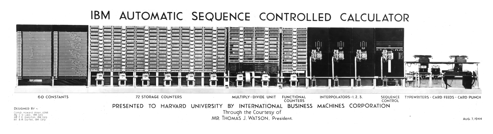

In contrast to other computer projects of the same period, Mark I did not use vacuum tubes: it was an electromechanical computer. It functioned using mechanical calculational devices (similar to adding machines), and electrical switches, relays, and connectors (similar to those used in telephone exchanges of the era). Preference was given to a technology that could be built easily and quickly from available IBM components.
Mark I's pioneering innovation was how it combined its many components to make the first programmable computer. This meant it could be easily used in a wide variety of problems, including those unforseen at the time of its design. Other computers of the first generation had to be completely re-wired to perform different problems, or were built to solve a single mathematical procedure, such as decoding enemy messages.
[ open image in a new tab ]
The portion of the machine called Sequence Control, Aiken's invention, was responsible for Mark I s programmable nature. This section read instructions via punched paper tape, similar to that of a player piano. The tape contained a sequence of instructions to be performed on numbers that were registered in the machine's data storage units. These data units were either constants, entered by switches before running a program, or variable units called counters which could be added or substracted from. Every counter was essentially a mechanical adding machine with an address, which could be read and operated on according to instructions on the sequence tape.
Mark I also included punch card readers as data input, which were the standard method of data processing in the period and IBM's main product at the time.
For mathematical operations like multiplication, exponentials and trigonometric functions, Mark I included special mechanical calculation units. These were removed from the machine after it was decommissioned in 1959.
One of Mark I's main innovations was the possibility of entering custom mathematical functions on additional units of paper tape readers called interpolators. Interpolators were similar to the sequence tape readers but read tape encoded with numbers and mathematical functions rather than instructions.
The computer's output system consisted of standard IBM tele-typewriters and card punching machines.
One of Mark I's characteristic innovations that made it programmable was its synchronous design. Its mechanical components such as sequence control, interpolators and counters were set in motion by a single drive shaft powered by a motor at a set speed. This guaranteed that the speed of operation was the same throughout the machine so that its different parts could work as a single unit. This speed was three turns or cycles per second (3 Hz).
Howard Aiken emphasized the unequalled reliability and precision of calculation of Mark I, even if it was hundreds of times slower than would have been possible with vacuum tubes. Through this sturdy build and precise performance, Mark I was able to work practically uninterrupted for 16 years.
{kind=link}